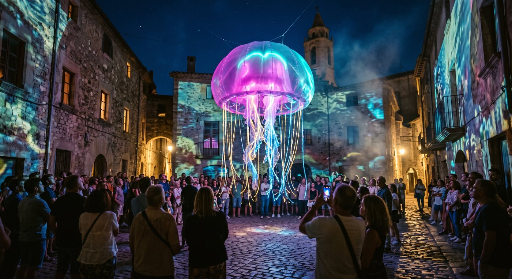

✨ Espai Inaugural

🔵 PUNT 1 DEL CIRCUIT
📍 Plaça 1 d’Octubre
El jardí de les meduses
La plaça s'omple de vida marina amb la presència de la primera gran Medusa inflable gegant. En aquest espai central podreu gaudir de l'espectacle inaugural («Vida i Mort») a les 21:30 h, i tot seguit de la hipnòtica sessió audiovisual en viu «Ommatidia» (21:45 h) a càrrec de mathr & netz.